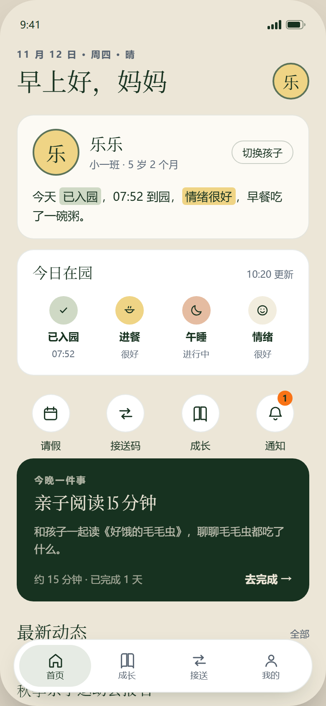
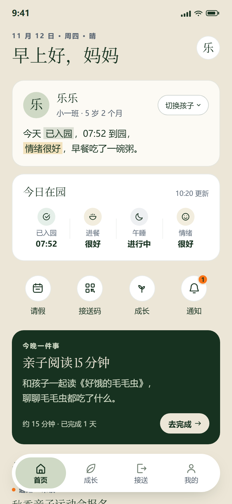

01 首页
左：手工稿 · 右：OpenDesign


17 接送
左：手工稿 · 右：OpenDesign；下方为 OpenDesign 三态


 在园中 / 未入园 / 已接走
在园中 / 未入园 / 已接走
养成星球 · 家长端 · PILOT REVIEW
同一份 DNA v1 与同一页内容，分别由手工与 OpenDesign 生成。先看这两页的差异，再决定批量是否继续。
左：手工稿 · 右：OpenDesign


左：手工稿 · 右：OpenDesign；下方为 OpenDesign 三态
在园中 / 未入园 / 已接走